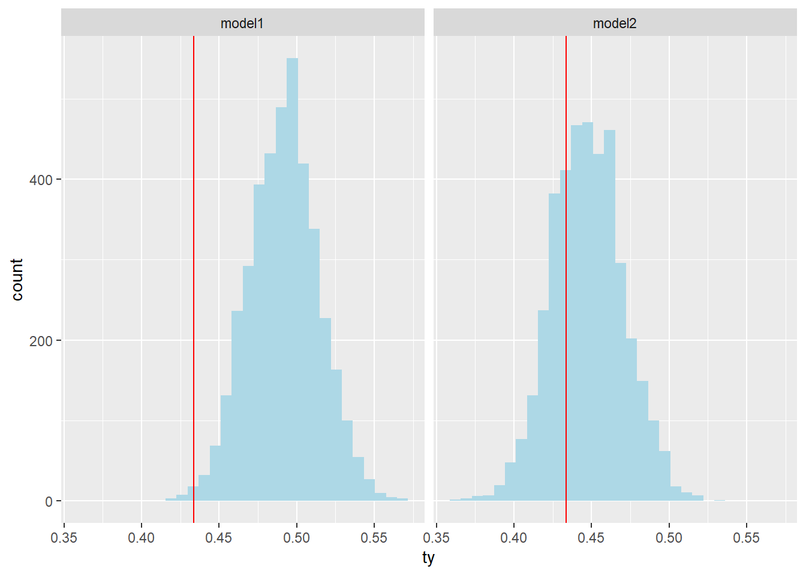

library(readr)
library(tidyverse)
library(here)
library(rstan)
library(bayesplot)
library(loo)
library(tidybayes) Assignment2
1
a)
From lecture 4: Assuming \(\sigma\) is known, both likelihood and prior is normal, we have conjugate prior that our posterior also follows normal distribution:
\[p(\mu|y) \sim N(\mu_{posterior}, \sigma_{posterior}^2)\] Where
\[\mu_{posterior} = N(\frac{\mu_0/\sigma_0^2+n*\bar{y}/\sigma^2}{1/\sigma_{\mu0}^2+n/\sigma^2}, \frac{1}{1/\sigma_{\mu0}^2+n/\sigma^2})\]
mu0 = 100
sigma0 = 15
sigma = 15
mu = 113
n = 10
mu_posterior = (mu0/sigma0^2 + n*mu/sigma^2)/(1/sigma0^2+n/sigma^2)
mu_posterior[1] 111.8182sigma_posterior = 1/(1/sigma0^2+n/sigma^2)
sigma_posterior[1] 20.45455posterior mean is 111.82 and posterior variance is 20.45
ci_lower <- qnorm(p = 0.025, mean = mu_posterior, sd = sqrt(sigma_posterior))
ci_upper <- qnorm(p = 0.975, mean = mu_posterior, sd = sqrt(sigma_posterior))
ci_lower[1] 102.9539ci_upper[1] 120.6825The 95% credible interval is [102.95, 120.68]
b)
\[E[(\hat\mu-\mu^*)^2|\mu^*]= E[(\hat\mu-E(\hat\mu)+E(\hat\mu) -\mu^*)^2|\mu^*]\]
\[ = E[(\hat\mu-E(\hat\mu))^2 + 2(\hat\mu-E(\hat\mu))(E(\hat\mu)-\mu^*) + (E(\hat\mu) - \mu^*)^2|\mu^*]\] \[ = E[(\hat\mu-E(\hat\mu))^2|\mu^*] + E[(E(\hat\mu)- \mu^*)|\mu^*]\]
c)
Assuming \(\mu^* =112\)
For Bayesian: bias = 111.82 - 112 = 0.18 variance = 20.45 MSE = 20.45 + 0.18
For MLE:x` Bias = 113 - 112 = 1 Variance = \(\sigma^2/n = 22.5\) MSE = 1 + 22.5 = 23.5
MLE estimates has larger bias, variance, and MSE
d)
Sampling distribution for MLE:
Normal(112, 15)
For Bayes, the sampling distribution is the the posterior distribution in a
mle_mu <- 113
mle_var <- 22.5
x <- seq(from = 100, to = 130, by = 0.1)
mle_data <- dnorm(x,mle_mu, sqrt(mle_var) )
bayes_data <- dnorm(x,111.8182, sqrt(20.45455))
data <- data.frame(x, mle_data, bayes_data)
data %>%
pivot_longer(cols = c("mle_data","bayes_data"), names_to = "type", values_to = "density") %>%
ggplot(aes(x = x, col = type)) +
geom_area(aes(y=density)) +
labs(title = "Sampling densities by type")+
geom_vline(xintercept = 112, color = "black")The MLE in theroy is an unbiased estimator, so it should have larger variance. For bayes estimator, it is more biased towards to the prior. However, in our case, we see that for bayes estimator it has smaller bias and variance since we only have 10 data value. As we have more data values, the MLE should get close to the expected value, bias will approch to 0 and variance will decrease.
n <- seq(from = 10, to = 100, by = 1)
mle_mu <- 113
mle_var <- 15^2/n
mu_posterior = (mu0/sigma0^2 + n*mu/sigma^2)/(1/sigma0^2+n/sigma^2)
sigma_posterior = 1/(1/sigma0^2+n/sigma^2)
d <- data.frame(n, mle_mu, mle_var,mu_posterior, sigma_posterior)
d %>% mutate(mle_bias = mle_mu - 112, bayes_bias = mu_posterior - 112,
mle_MSE = mle_bias+mle_var, bayes_MSE = bayes_bias+ sigma_posterior) %>%
ggplot(aes(x = n, y = bayes_MSE/mle_MSE)) + geom_point()For smaller sample size, the MSE of Bayes estimator is smaller than ML estimator, as sample size increase the difference between two estimator become smaller.
2
sweden <- read_csv(here("data/sweden.csv"))sweden <- sweden %>% mutate(mortality = deaths/pop)sweden %>%
group_by(year) %>% summarise(avg_mort_rate = mean(mortality)) %>%
ggplot(aes(x = year,y = avg_mort_rate)) +
geom_line() +
geom_point() +
labs(title = 'average mortality rate over years')We see that the average mortality rate is decreasing over time.
sweden %>% filter(age>= 50 & age < 60) %>%
ggplot(aes(x = year, y = mortality, col = factor(age))) +
geom_point() +
labs(title = 'average mortality rate over years for 50-59')sweden %>% filter(age>= 60 & age < 70) %>%
ggplot(aes(x = year, y = mortality, col = factor(age))) +
geom_point()+
labs(title = 'average mortality rate over years for 60-69')sweden %>% filter(age>= 70 & age < 80) %>%
ggplot(aes(x = year, y = mortality, col = factor(age))) +
geom_point()+
labs(title = 'average mortality rate over years for 70-79')sweden %>% filter(age>= 80 & age < 90) %>%
ggplot(aes(x = year, y = mortality, col = factor(age))) +
geom_point()+
labs(title = 'average mortality rate over years for 80-89')sweden %>% filter(age >= 90) %>%
ggplot(aes(x = year, y = mortality, col = factor(age))) +
geom_point()+
labs(title = 'average mortality rate over years for 90-100')We see a overall decreasing trend for all the age group as we see for the average mortality rate. However, different age have different slope, for younger age the slope is steeper. Also notice that younger people have much lower mortality. For example in the age group 50-59, the mortality ranges from 0.002 to 0.008, where as for age group 90-100, the mortality rate ranges from 0.2 to 0.6.
b)
After some trial and error, I found that both \(\alpha\) and \(\beta\) should be really small positive value. So let’s put halfnormal(0, 0.01) on both.
set.seed(1)
sweden_2020 <- sweden %>% filter(year == 2020)
prior_sample_alpha <- abs(rnorm(1000, sd = 0.01))
prior_sample_beta <- abs(rnorm(1000, sd = 0.01))
predicted_y1 = rep(0,1000*51)
j = 1
for (i in 1:1000){
for (index in 1:nrow(sweden_2020)){
predicted_y1[j] = rpois(1, lambda = prior_sample_alpha[i]*
exp(prior_sample_beta[i]*sweden_2020$age[index])*sweden_2020$pop[index])
j = j + 1
}
}data.frame(predicted_y1) %>%
ggplot(aes(x = predicted_y1, y = ..density..)) +
geom_histogram(color = 'black', fill = 'lightblue') +
geom_vline(xintercept = 1700, color = "blue") +
labs(title = 'prior predictive distribution', x = 'death') +
annotate("text", x = 5000, y =3e-4, label= "observed median",
color = "blue", size = 5)+ scale_x_continuous(limits = c(0, 20000))
c)
Prior:
\[\alpha \sim HalfNormal(0, 0.01)\] \[\beta \sim HalfNormal(0, 0.01)\] Model:
\[D_x \sim Poisson(\mu_xP_x)\]
where \(\mu_x = \alpha e^{\beta x}\)
\(x\) refer to age
\(P_x\) refer to population
stan_data <- list(N = nrow(sweden_2020),
y = sweden_2020$deaths,
age = sweden_2020$age - mean(sweden_2020$age),
population = sweden_2020$pop)
mod <- stan(data = stan_data,
file = here("Assignments/Assignment2/2c_model.stan"),
iter = 5000,
seed = 1)
SAMPLING FOR MODEL 'anon_model' NOW (CHAIN 1).
Chain 1:
Chain 1: Gradient evaluation took 3.3e-05 seconds
Chain 1: 1000 transitions using 10 leapfrog steps per transition would take 0.33 seconds.
Chain 1: Adjust your expectations accordingly!
Chain 1:
Chain 1:
Chain 1: Iteration: 1 / 5000 [ 0%] (Warmup)
Chain 1: Iteration: 500 / 5000 [ 10%] (Warmup)
Chain 1: Iteration: 1000 / 5000 [ 20%] (Warmup)
Chain 1: Iteration: 1500 / 5000 [ 30%] (Warmup)
Chain 1: Iteration: 2000 / 5000 [ 40%] (Warmup)
Chain 1: Iteration: 2500 / 5000 [ 50%] (Warmup)
Chain 1: Iteration: 2501 / 5000 [ 50%] (Sampling)
Chain 1: Iteration: 3000 / 5000 [ 60%] (Sampling)
Chain 1: Iteration: 3500 / 5000 [ 70%] (Sampling)
Chain 1: Iteration: 4000 / 5000 [ 80%] (Sampling)
Chain 1: Iteration: 4500 / 5000 [ 90%] (Sampling)
Chain 1: Iteration: 5000 / 5000 [100%] (Sampling)
Chain 1:
Chain 1: Elapsed Time: 0.189 seconds (Warm-up)
Chain 1: 0.176 seconds (Sampling)
Chain 1: 0.365 seconds (Total)
Chain 1:
SAMPLING FOR MODEL 'anon_model' NOW (CHAIN 2).
Chain 2:
Chain 2: Gradient evaluation took 1.3e-05 seconds
Chain 2: 1000 transitions using 10 leapfrog steps per transition would take 0.13 seconds.
Chain 2: Adjust your expectations accordingly!
Chain 2:
Chain 2:
Chain 2: Iteration: 1 / 5000 [ 0%] (Warmup)
Chain 2: Iteration: 500 / 5000 [ 10%] (Warmup)
Chain 2: Iteration: 1000 / 5000 [ 20%] (Warmup)
Chain 2: Iteration: 1500 / 5000 [ 30%] (Warmup)
Chain 2: Iteration: 2000 / 5000 [ 40%] (Warmup)
Chain 2: Iteration: 2500 / 5000 [ 50%] (Warmup)
Chain 2: Iteration: 2501 / 5000 [ 50%] (Sampling)
Chain 2: Iteration: 3000 / 5000 [ 60%] (Sampling)
Chain 2: Iteration: 3500 / 5000 [ 70%] (Sampling)
Chain 2: Iteration: 4000 / 5000 [ 80%] (Sampling)
Chain 2: Iteration: 4500 / 5000 [ 90%] (Sampling)
Chain 2: Iteration: 5000 / 5000 [100%] (Sampling)
Chain 2:
Chain 2: Elapsed Time: 0.167 seconds (Warm-up)
Chain 2: 0.192 seconds (Sampling)
Chain 2: 0.359 seconds (Total)
Chain 2:
SAMPLING FOR MODEL 'anon_model' NOW (CHAIN 3).
Chain 3:
Chain 3: Gradient evaluation took 1.2e-05 seconds
Chain 3: 1000 transitions using 10 leapfrog steps per transition would take 0.12 seconds.
Chain 3: Adjust your expectations accordingly!
Chain 3:
Chain 3:
Chain 3: Iteration: 1 / 5000 [ 0%] (Warmup)
Chain 3: Iteration: 500 / 5000 [ 10%] (Warmup)
Chain 3: Iteration: 1000 / 5000 [ 20%] (Warmup)
Chain 3: Iteration: 1500 / 5000 [ 30%] (Warmup)
Chain 3: Iteration: 2000 / 5000 [ 40%] (Warmup)
Chain 3: Iteration: 2500 / 5000 [ 50%] (Warmup)
Chain 3: Iteration: 2501 / 5000 [ 50%] (Sampling)
Chain 3: Iteration: 3000 / 5000 [ 60%] (Sampling)
Chain 3: Iteration: 3500 / 5000 [ 70%] (Sampling)
Chain 3: Iteration: 4000 / 5000 [ 80%] (Sampling)
Chain 3: Iteration: 4500 / 5000 [ 90%] (Sampling)
Chain 3: Iteration: 5000 / 5000 [100%] (Sampling)
Chain 3:
Chain 3: Elapsed Time: 0.16 seconds (Warm-up)
Chain 3: 0.165 seconds (Sampling)
Chain 3: 0.325 seconds (Total)
Chain 3:
SAMPLING FOR MODEL 'anon_model' NOW (CHAIN 4).
Chain 4:
Chain 4: Gradient evaluation took 1.1e-05 seconds
Chain 4: 1000 transitions using 10 leapfrog steps per transition would take 0.11 seconds.
Chain 4: Adjust your expectations accordingly!
Chain 4:
Chain 4:
Chain 4: Iteration: 1 / 5000 [ 0%] (Warmup)
Chain 4: Iteration: 500 / 5000 [ 10%] (Warmup)
Chain 4: Iteration: 1000 / 5000 [ 20%] (Warmup)
Chain 4: Iteration: 1500 / 5000 [ 30%] (Warmup)
Chain 4: Iteration: 2000 / 5000 [ 40%] (Warmup)
Chain 4: Iteration: 2500 / 5000 [ 50%] (Warmup)
Chain 4: Iteration: 2501 / 5000 [ 50%] (Sampling)
Chain 4: Iteration: 3000 / 5000 [ 60%] (Sampling)
Chain 4: Iteration: 3500 / 5000 [ 70%] (Sampling)
Chain 4: Iteration: 4000 / 5000 [ 80%] (Sampling)
Chain 4: Iteration: 4500 / 5000 [ 90%] (Sampling)
Chain 4: Iteration: 5000 / 5000 [100%] (Sampling)
Chain 4:
Chain 4: Elapsed Time: 0.161 seconds (Warm-up)
Chain 4: 0.184 seconds (Sampling)
Chain 4: 0.345 seconds (Total)
Chain 4: traceplot(mod, pars = c('alpha','beta'))The traceplot shows that four chains are mixing very well.
summary(mod)$summary[c("alpha", "beta"),] mean se_mean sd 2.5% 25% 50%
alpha 0.02662496 1.528561e-06 0.0001007584 0.02642756 0.02655638 0.02662509
beta 0.11945000 4.691812e-06 0.0003166919 0.11882872 0.11923875 0.11944742
75% 97.5% n_eff Rhat
alpha 0.02669412 0.02682043 4345.072 1.000555
beta 0.11966336 0.12007872 4556.093 1.000325The effective sample is high and Rhat very close to 1. This also shows convergence.
The posterior mean of alpha is really small 0.02662496, this is the mortality rate when the age equal to the mean age(75). The posterior mean of beta is 0.119, it means as age increase by one unit, the log mortality will increase by beta.
d)
y <- sweden_2020$deaths
yrep <- extract(mod)[["death_rep"]]
samp100 <- sample(nrow(yrep), 100)
ppc_dens_overlay(y, yrep[samp100, ]) + ggtitle("distribution of observed versus predicted death")
The density of the replicated is close to the observed density.
ppc_stat(y, yrep, stat = 'median') + ggtitle("distribution of replicated death")14[1] 14The median is right at the center of our replicated death. This indicating our model performing well.
e)
# talbe for estimate
alphas <- c()
betas <- c()
years <- seq(1990, 2020, by = 1)
for (i in 1:length(years)){
year_data <- sweden %>% filter(year == years[i])
stan_data <- list(N = nrow(year_data),
y = year_data$deaths,
age = year_data$age - mean(year_data$age),
population = year_data$pop)
mod_year_death <- stan(data = stan_data,
file = here("Assignments/Assignment2/2c_model.stan"),
iter = 5000,seed = 1)
alphas <- rbind(alphas,summary(mod_year_death)$summary[c("alpha"),])
betas <- rbind(betas,summary(mod_year_death)$summary[c("beta"),])
}data.frame(alphas) %>%
ggplot(aes(x = years)) +
geom_line(aes(y = mean)) +
geom_ribbon(aes(ymin = X2.5., ymax = X97.5.), alpha = 0.2) +
labs(y = 'estimate', title = 'Estimated alpha over 1990 - 2020')data.frame(betas) %>%
ggplot(aes(x = years)) +
geom_line(aes(y = mean)) +
geom_ribbon(aes(ymin = X2.5., ymax = X97.5.), alpha = 0.2) +
labs(y = 'estimate', title = 'Estimated betas over 1990 - 2020')Based on the plot, we see that alpha is decreasing over the years. In opposite, beta is increasing This indicates that the mortality rate is lower over the year, but as age increase, the changes to mortality is increasing.
f)
output_table <- data.frame()
for (i in 1:nrow(alphas)){ # each yearh
mean_mu = 0
lower_mu = 0
upper_mu = 0
for (age in seq(-35,25,1)){ # each age
# mean
mean_mu = mean_mu + exp(-alphas[i,1]*exp(betas[i,1]*age))
# lower bound
lower_mu = lower_mu + exp(-alphas[i,4]*exp(betas[i,4]*age))
# upper bound
upper_mu = upper_mu + exp(-alphas[i,8]*exp(betas[i,8]*age))
}
life_exp <- c(mean_mu, lower_mu, upper_mu)
output_table <- rbind(output_table, life_exp)
}
colnames(output_table) <- c('mean', '2.5% lower bound', '97.5% upper bound')output_table mean 2.5% lower bound 97.5% upper bound
1 55.98960 56.06150 55.91820
2 56.08642 56.15716 56.01526
3 56.14392 56.21342 56.07327
4 55.99276 56.06312 55.92029
5 56.36199 56.42982 56.29439
6 56.28944 56.35968 56.21917
7 56.30310 56.37127 56.23359
8 56.37533 56.44299 56.30746
9 56.41614 56.48234 56.34908
10 56.35038 56.41724 56.28326
11 56.44958 56.51652 56.38322
12 56.46086 56.52562 56.39578
13 56.38944 56.45697 56.32391
14 56.53968 56.60633 56.47287
15 56.69297 56.75793 56.62808
16 56.68464 56.74963 56.61913
17 56.71823 56.78231 56.65388
18 56.69621 56.76084 56.63091
19 56.73479 56.80033 56.66920
20 56.83857 56.90123 56.77474
21 56.84737 56.91046 56.78353
22 56.88165 56.94496 56.81812
23 56.80410 56.86815 56.74040
24 56.92756 56.99023 56.86377
25 57.04193 57.10348 56.97914
26 56.99062 57.05233 56.92699
27 57.03156 57.09416 56.96787
28 56.99455 57.05712 56.93258
29 57.06222 57.12192 57.00135
30 57.23793 57.29895 57.17633
31 56.89958 56.96144 56.83694output_table %>%
ggplot(aes(x = years)) +
geom_line(aes(y = mean)) +
geom_ribbon(aes(ymin = `2.5% lower bound`, ymax = `97.5% upper bound`), alpha = 0.2) +
labs(y = 'estimate', title = 'Estimated life expectancy over 1990 -2020')
The estimated life expectancy increased over the years from about 56 to about 57.
3
q3data <- read_table("http://www.stat.columbia.edu/~gelman/arm/examples/arsenic/wells.dat", col_names = c("id", "switch", "arsenic", "dist", "assoc", "educ"), skip = 1)
q3data <- q3data %>% mutate(switch_str = if_else(switch == 0, "Didn't Switch", "Switched"))
q3data# A tibble: 3,020 × 7
id switch arsenic dist assoc educ switch_str
<chr> <dbl> <dbl> <dbl> <dbl> <dbl> <chr>
1 "\"1\"" 1 2.36 16.8 0 0 Switched
2 "\"2\"" 1 0.71 47.3 0 0 Switched
3 "\"3\"" 0 2.07 21.0 0 10 Didn't Switch
4 "\"4\"" 1 1.15 21.5 0 12 Switched
5 "\"5\"" 1 1.1 40.9 1 14 Switched
6 "\"6\"" 1 3.9 69.5 1 9 Switched
7 "\"7\"" 1 2.97 80.7 1 4 Switched
8 "\"8\"" 1 3.24 55.1 0 10 Switched
9 "\"9\"" 1 3.28 52.6 1 0 Switched
10 "\"10\"" 1 2.52 75.1 1 0 Switched
# … with 3,010 more rowsa)
q3data %>% ggplot(aes(x = arsenic, y = dist , col = as.factor(switch_str))) +
geom_point()+
theme_bw() +
geom_smooth(method = "lm")Based on above plot, we see that there is more people switch as the arsenic level go up, and it looks like there is more people did not switch when the distance to the good well is larger. This is why we are seeing different slope in the plot.
q3data %>% ggplot(aes(arsenic))+geom_histogram(bins=50)+facet_grid(.~switch_str)+
theme_bw() Based on above histogram, there are much more people did not switch when the arsenic is not that high(0 to 2.5). For the people who switched, the distribution of the arsenic level in their well was shifted more to the right.
q3data %>% ggplot(aes(dist))+geom_histogram(bins=50)+facet_grid(.~switch_str)+
theme_bw() 
The distribution for distance for people who switch and didn’t switch their well is very similar.
b)
d <- q3data$dist - mean(q3data$dist)
a <- q3data$arsenic - mean(q3data$arsenic)
da <- d*a
# named list to input for stan function
data <- list(N = length(d),
d = d,
a = a,
da = da,
y = q3data$switch)
fit1 <- stan(file = here("Assignments/Assignment2/3b1_model.stan"),
data = data,
iter = 2000,
seed = 1)
SAMPLING FOR MODEL 'anon_model' NOW (CHAIN 1).
Chain 1:
Chain 1: Gradient evaluation took 0.000656 seconds
Chain 1: 1000 transitions using 10 leapfrog steps per transition would take 6.56 seconds.
Chain 1: Adjust your expectations accordingly!
Chain 1:
Chain 1:
Chain 1: Iteration: 1 / 2000 [ 0%] (Warmup)
Chain 1: Iteration: 200 / 2000 [ 10%] (Warmup)
Chain 1: Iteration: 400 / 2000 [ 20%] (Warmup)
Chain 1: Iteration: 600 / 2000 [ 30%] (Warmup)
Chain 1: Iteration: 800 / 2000 [ 40%] (Warmup)
Chain 1: Iteration: 1000 / 2000 [ 50%] (Warmup)
Chain 1: Iteration: 1001 / 2000 [ 50%] (Sampling)
Chain 1: Iteration: 1200 / 2000 [ 60%] (Sampling)
Chain 1: Iteration: 1400 / 2000 [ 70%] (Sampling)
Chain 1: Iteration: 1600 / 2000 [ 80%] (Sampling)
Chain 1: Iteration: 1800 / 2000 [ 90%] (Sampling)
Chain 1: Iteration: 2000 / 2000 [100%] (Sampling)
Chain 1:
Chain 1: Elapsed Time: 9.272 seconds (Warm-up)
Chain 1: 5.483 seconds (Sampling)
Chain 1: 14.755 seconds (Total)
Chain 1:
SAMPLING FOR MODEL 'anon_model' NOW (CHAIN 2).
Chain 2:
Chain 2: Gradient evaluation took 0.000462 seconds
Chain 2: 1000 transitions using 10 leapfrog steps per transition would take 4.62 seconds.
Chain 2: Adjust your expectations accordingly!
Chain 2:
Chain 2:
Chain 2: Iteration: 1 / 2000 [ 0%] (Warmup)
Chain 2: Iteration: 200 / 2000 [ 10%] (Warmup)
Chain 2: Iteration: 400 / 2000 [ 20%] (Warmup)
Chain 2: Iteration: 600 / 2000 [ 30%] (Warmup)
Chain 2: Iteration: 800 / 2000 [ 40%] (Warmup)
Chain 2: Iteration: 1000 / 2000 [ 50%] (Warmup)
Chain 2: Iteration: 1001 / 2000 [ 50%] (Sampling)
Chain 2: Iteration: 1200 / 2000 [ 60%] (Sampling)
Chain 2: Iteration: 1400 / 2000 [ 70%] (Sampling)
Chain 2: Iteration: 1600 / 2000 [ 80%] (Sampling)
Chain 2: Iteration: 1800 / 2000 [ 90%] (Sampling)
Chain 2: Iteration: 2000 / 2000 [100%] (Sampling)
Chain 2:
Chain 2: Elapsed Time: 9.461 seconds (Warm-up)
Chain 2: 6.092 seconds (Sampling)
Chain 2: 15.553 seconds (Total)
Chain 2:
SAMPLING FOR MODEL 'anon_model' NOW (CHAIN 3).
Chain 3:
Chain 3: Gradient evaluation took 0.00047 seconds
Chain 3: 1000 transitions using 10 leapfrog steps per transition would take 4.7 seconds.
Chain 3: Adjust your expectations accordingly!
Chain 3:
Chain 3:
Chain 3: Iteration: 1 / 2000 [ 0%] (Warmup)
Chain 3: Iteration: 200 / 2000 [ 10%] (Warmup)
Chain 3: Iteration: 400 / 2000 [ 20%] (Warmup)
Chain 3: Iteration: 600 / 2000 [ 30%] (Warmup)
Chain 3: Iteration: 800 / 2000 [ 40%] (Warmup)
Chain 3: Iteration: 1000 / 2000 [ 50%] (Warmup)
Chain 3: Iteration: 1001 / 2000 [ 50%] (Sampling)
Chain 3: Iteration: 1200 / 2000 [ 60%] (Sampling)
Chain 3: Iteration: 1400 / 2000 [ 70%] (Sampling)
Chain 3: Iteration: 1600 / 2000 [ 80%] (Sampling)
Chain 3: Iteration: 1800 / 2000 [ 90%] (Sampling)
Chain 3: Iteration: 2000 / 2000 [100%] (Sampling)
Chain 3:
Chain 3: Elapsed Time: 8.802 seconds (Warm-up)
Chain 3: 5.143 seconds (Sampling)
Chain 3: 13.945 seconds (Total)
Chain 3:
SAMPLING FOR MODEL 'anon_model' NOW (CHAIN 4).
Chain 4:
Chain 4: Gradient evaluation took 0.000481 seconds
Chain 4: 1000 transitions using 10 leapfrog steps per transition would take 4.81 seconds.
Chain 4: Adjust your expectations accordingly!
Chain 4:
Chain 4:
Chain 4: Iteration: 1 / 2000 [ 0%] (Warmup)
Chain 4: Iteration: 200 / 2000 [ 10%] (Warmup)
Chain 4: Iteration: 400 / 2000 [ 20%] (Warmup)
Chain 4: Iteration: 600 / 2000 [ 30%] (Warmup)
Chain 4: Iteration: 800 / 2000 [ 40%] (Warmup)
Chain 4: Iteration: 1000 / 2000 [ 50%] (Warmup)
Chain 4: Iteration: 1001 / 2000 [ 50%] (Sampling)
Chain 4: Iteration: 1200 / 2000 [ 60%] (Sampling)
Chain 4: Iteration: 1400 / 2000 [ 70%] (Sampling)
Chain 4: Iteration: 1600 / 2000 [ 80%] (Sampling)
Chain 4: Iteration: 1800 / 2000 [ 90%] (Sampling)
Chain 4: Iteration: 2000 / 2000 [100%] (Sampling)
Chain 4:
Chain 4: Elapsed Time: 9.75 seconds (Warm-up)
Chain 4: 5.393 seconds (Sampling)
Chain 4: 15.143 seconds (Total)
Chain 4: d <- q3data$dist - mean(q3data$dist)
log_a <- log(q3data$arsenic) - mean(log(q3data$arsenic))
da <- d*a
# named list to input for stan function
data <- list(N = length(d),
d = d,
a = log_a,
da = da,
y = q3data$switch)
fit2 <- stan(file = here("Assignments/Assignment2/3b2_model.stan"),
data = data,
iter = 2000)
SAMPLING FOR MODEL 'anon_model' NOW (CHAIN 1).
Chain 1:
Chain 1: Gradient evaluation took 0.000748 seconds
Chain 1: 1000 transitions using 10 leapfrog steps per transition would take 7.48 seconds.
Chain 1: Adjust your expectations accordingly!
Chain 1:
Chain 1:
Chain 1: Iteration: 1 / 2000 [ 0%] (Warmup)
Chain 1: Iteration: 200 / 2000 [ 10%] (Warmup)
Chain 1: Iteration: 400 / 2000 [ 20%] (Warmup)
Chain 1: Iteration: 600 / 2000 [ 30%] (Warmup)
Chain 1: Iteration: 800 / 2000 [ 40%] (Warmup)
Chain 1: Iteration: 1000 / 2000 [ 50%] (Warmup)
Chain 1: Iteration: 1001 / 2000 [ 50%] (Sampling)
Chain 1: Iteration: 1200 / 2000 [ 60%] (Sampling)
Chain 1: Iteration: 1400 / 2000 [ 70%] (Sampling)
Chain 1: Iteration: 1600 / 2000 [ 80%] (Sampling)
Chain 1: Iteration: 1800 / 2000 [ 90%] (Sampling)
Chain 1: Iteration: 2000 / 2000 [100%] (Sampling)
Chain 1:
Chain 1: Elapsed Time: 10.728 seconds (Warm-up)
Chain 1: 6.164 seconds (Sampling)
Chain 1: 16.892 seconds (Total)
Chain 1:
SAMPLING FOR MODEL 'anon_model' NOW (CHAIN 2).
Chain 2:
Chain 2: Gradient evaluation took 0.000497 seconds
Chain 2: 1000 transitions using 10 leapfrog steps per transition would take 4.97 seconds.
Chain 2: Adjust your expectations accordingly!
Chain 2:
Chain 2:
Chain 2: Iteration: 1 / 2000 [ 0%] (Warmup)
Chain 2: Iteration: 200 / 2000 [ 10%] (Warmup)
Chain 2: Iteration: 400 / 2000 [ 20%] (Warmup)
Chain 2: Iteration: 600 / 2000 [ 30%] (Warmup)
Chain 2: Iteration: 800 / 2000 [ 40%] (Warmup)
Chain 2: Iteration: 1000 / 2000 [ 50%] (Warmup)
Chain 2: Iteration: 1001 / 2000 [ 50%] (Sampling)
Chain 2: Iteration: 1200 / 2000 [ 60%] (Sampling)
Chain 2: Iteration: 1400 / 2000 [ 70%] (Sampling)
Chain 2: Iteration: 1600 / 2000 [ 80%] (Sampling)
Chain 2: Iteration: 1800 / 2000 [ 90%] (Sampling)
Chain 2: Iteration: 2000 / 2000 [100%] (Sampling)
Chain 2:
Chain 2: Elapsed Time: 10.073 seconds (Warm-up)
Chain 2: 6.299 seconds (Sampling)
Chain 2: 16.372 seconds (Total)
Chain 2:
SAMPLING FOR MODEL 'anon_model' NOW (CHAIN 3).
Chain 3:
Chain 3: Gradient evaluation took 0.000514 seconds
Chain 3: 1000 transitions using 10 leapfrog steps per transition would take 5.14 seconds.
Chain 3: Adjust your expectations accordingly!
Chain 3:
Chain 3:
Chain 3: Iteration: 1 / 2000 [ 0%] (Warmup)
Chain 3: Iteration: 200 / 2000 [ 10%] (Warmup)
Chain 3: Iteration: 400 / 2000 [ 20%] (Warmup)
Chain 3: Iteration: 600 / 2000 [ 30%] (Warmup)
Chain 3: Iteration: 800 / 2000 [ 40%] (Warmup)
Chain 3: Iteration: 1000 / 2000 [ 50%] (Warmup)
Chain 3: Iteration: 1001 / 2000 [ 50%] (Sampling)
Chain 3: Iteration: 1200 / 2000 [ 60%] (Sampling)
Chain 3: Iteration: 1400 / 2000 [ 70%] (Sampling)
Chain 3: Iteration: 1600 / 2000 [ 80%] (Sampling)
Chain 3: Iteration: 1800 / 2000 [ 90%] (Sampling)
Chain 3: Iteration: 2000 / 2000 [100%] (Sampling)
Chain 3:
Chain 3: Elapsed Time: 13.189 seconds (Warm-up)
Chain 3: 5.978 seconds (Sampling)
Chain 3: 19.167 seconds (Total)
Chain 3:
SAMPLING FOR MODEL 'anon_model' NOW (CHAIN 4).
Chain 4:
Chain 4: Gradient evaluation took 0.00048 seconds
Chain 4: 1000 transitions using 10 leapfrog steps per transition would take 4.8 seconds.
Chain 4: Adjust your expectations accordingly!
Chain 4:
Chain 4:
Chain 4: Iteration: 1 / 2000 [ 0%] (Warmup)
Chain 4: Iteration: 200 / 2000 [ 10%] (Warmup)
Chain 4: Iteration: 400 / 2000 [ 20%] (Warmup)
Chain 4: Iteration: 600 / 2000 [ 30%] (Warmup)
Chain 4: Iteration: 800 / 2000 [ 40%] (Warmup)
Chain 4: Iteration: 1000 / 2000 [ 50%] (Warmup)
Chain 4: Iteration: 1001 / 2000 [ 50%] (Sampling)
Chain 4: Iteration: 1200 / 2000 [ 60%] (Sampling)
Chain 4: Iteration: 1400 / 2000 [ 70%] (Sampling)
Chain 4: Iteration: 1600 / 2000 [ 80%] (Sampling)
Chain 4: Iteration: 1800 / 2000 [ 90%] (Sampling)
Chain 4: Iteration: 2000 / 2000 [100%] (Sampling)
Chain 4:
Chain 4: Elapsed Time: 9.809 seconds (Warm-up)
Chain 4: 5.788 seconds (Sampling)
Chain 4: 15.597 seconds (Total)
Chain 4: summary(fit1)$summary[c("beta[1]", "beta[2]", "beta[3]", "beta[4]"),] mean se_mean sd 2.5% 25%
beta[1] 0.351044718 9.307290e-04 0.039699167 0.26898998 0.325148544
beta[2] 0.470424845 9.155262e-04 0.041610084 0.38915473 0.441319966
beta[3] -0.008761098 1.541528e-05 0.001057381 -0.01081873 -0.009455740
beta[4] -0.001794466 1.487345e-05 0.001022777 -0.00378243 -0.002487063
50% 75% 97.5% n_eff Rhat
beta[1] 0.352405858 0.378123426 0.4259878815 1819.350 1.0005379
beta[2] 0.469938519 0.499886061 0.5482068661 2065.645 1.0005467
beta[3] -0.008750713 -0.008039080 -0.0067474328 4705.003 0.9995166
beta[4] -0.001787946 -0.001136824 0.0002006276 4728.665 0.9995508Interpretation:
\(\beta_0\): The log odds of people switch the well when they have average distance to closest safe well and average arsenic level.
\(\beta_1\): The change in odds of switching as the distance increase by one unit.
\(\beta_2\) The change in the log odds as the arsenic level increase by one unit.
\(\beta_3\) This is an interaction, it means that the effect of increase in arsenic level on the changes in the log odds of switching by increasing distance
The effect of \(\beta_2\) and \(\beta_3\) is not significant because its 95% credible interval contains 0.
summary(fit2)$summary[c("beta[1]", "beta[2]", "beta[3]", "beta[4]"),] mean se_mean sd 2.5% 25%
beta[1] 0.3354206254 9.210807e-04 0.0385978816 0.259201986 0.309914081
beta[2] 0.8788546494 1.581908e-03 0.0693279498 0.741366461 0.832088785
beta[3] -0.0096626471 1.647089e-05 0.0010579158 -0.011721125 -0.010372811
beta[4] -0.0008569099 1.460663e-05 0.0009833235 -0.002760058 -0.001533783
50% 75% 97.5% n_eff Rhat
beta[1] 0.335509218 0.361858821 0.410881890 1756.029 1.0005919
beta[2] 0.876993705 0.925464205 1.015823071 1920.678 0.9993039
beta[3] -0.009669077 -0.008949941 -0.007623158 4125.421 0.9996989
beta[4] -0.000850674 -0.000211990 0.001108955 4532.031 0.9999953The effective sample size is large and Rhat are close to one for both model.
c)
q3c <- as.data.frame(sapply(q3data, function(x) gsub("\"", "", x)))
ty_id <- q3c %>% filter(arsenic < 0.82) %>% mutate(id = as.numeric(noquote(id)))%>% pull(id)
ty <- sum(q3data$arsenic < 0.82 & q3data$switch == 1)/sum(q3data$arsenic < 0.82)yrep1 <- extract(fit1)[["y_rep"]] %>% t() %>% as_tibble()
yrep2 <- extract(fit2)[["y_rep"]] %>% t() %>% as_tibble()ty_1 <- yrep1 %>% slice(ty_id) %>% summarise_all(mean)%>% t() %>% as.data.frame()
ty_2 <- yrep2 %>% slice(ty_id) %>% summarise_all(mean)%>% t() %>% as.data.frame()data.frame(ty_1, ty_2) %>% rename(model1 = V1, model2 = V1.1) %>%
pivot_longer(cols = everything(), names_to = "model", values_to = "ty") %>%
ggplot(aes(x = ty)) +
geom_histogram(bins = 30, fill = "lightblue") +
geom_vline(xintercept = ty, color = "red") +
facet_wrap(.~model)
mean(ty_1 < ty)[1] 0.005mean(ty_2 < ty)[1] 0.268For model 1, there are only small portion(0.05) of simulated statistics is less than the observed test statistics. In model 2, there are 26.7% of test statistics are less than the observed test statistics. This means that model 2 performs better since it is more close to the observed distribution.
d)
log_lik_1 <- extract_log_lik(fit1)
log_lik_2 <- extract_log_lik(fit2)
loo1 <- loo(log_lik_1, save_psis = TRUE)
loo2 <- loo(log_lik_2, save_psis = TRUE)
loo_compare(loo1, loo2) elpd_diff se_diff
model2 0.0 0.0
model1 -15.2 4.4 The second model is better because it has higher elpd.
e)
mod1_elpdi <- loo1$pointwise[,1]
mod2_elpdi <- loo2$pointwise[,1]
data.frame(mod1_elpdi, mod2_elpdi, switch = as.factor(q3data$switch)) %>%
ggplot(aes(x = mod1_elpdi, y = mod2_elpdi, color = switch)) +
geom_point() +
labs(x = 'elpd in model 1',
y = 'elpd in model 2',
title = "Model 1 vs Model 2 ELPDs")Based on above plot, most of the dot on the left have higher elpd in model 2, this means that the probability of observing the left one out point is higher, indicating better model.
diff_elpd <- mod1_elpdi - mod2_elpdi
data.frame(diff_elpd, arsenic = q3data$arsenic,
y = as.factor(q3data$switch)) %>%
ggplot(aes(x = log(arsenic), y = diff_elpd, color = y)) +
geom_point() +
labs(y = 'Difference in elpd (model1 - model2)')In the next plot, we see that model 1 performs better than model 2 for switch data when the log arsenic is on the low end or high end. However when the log arsenic is around the mean, model 2 outperforms model 1(difference above 0). We see an opposite trend for non-switched data that model 1 is performing better when the log arsenic is around the mean.
f)
\(ELPD_i = log(p(y_i|y_{-i}))\) \(exp(ELPD_i) = p(y_i|y_{-i})\)
In our case, we have a discrete outcome of switch or not, this represents the probability mass function of the predicted probability of individual switch or not.
g)
library(arm)
yhat1 <- exp(mod1_elpdi)
yhat2 <- exp(mod2_elpdi)
y <- q3data$switch
residual1 <- y - yhat1
residual2 <- y - yhat2
# model 1
binnedplot(x = q3data$arsenic, y = residual1, xlab = 'arsenic', nclass = 40)binnedplot(x = log(q3data$arsenic), y = residual1, xlab = 'arsenic', nclass = 40)The lines represents the +/- 2 SE for each bin, we see a similar number of bins outside of the SE for both model. Also, there is a slightly increasing trend of the residual in both plot, the residual is larger as the arsenic level increase. Overall, I think the residual look very similar for both model.